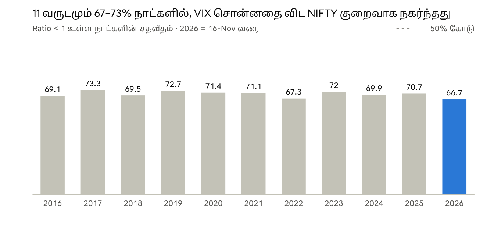
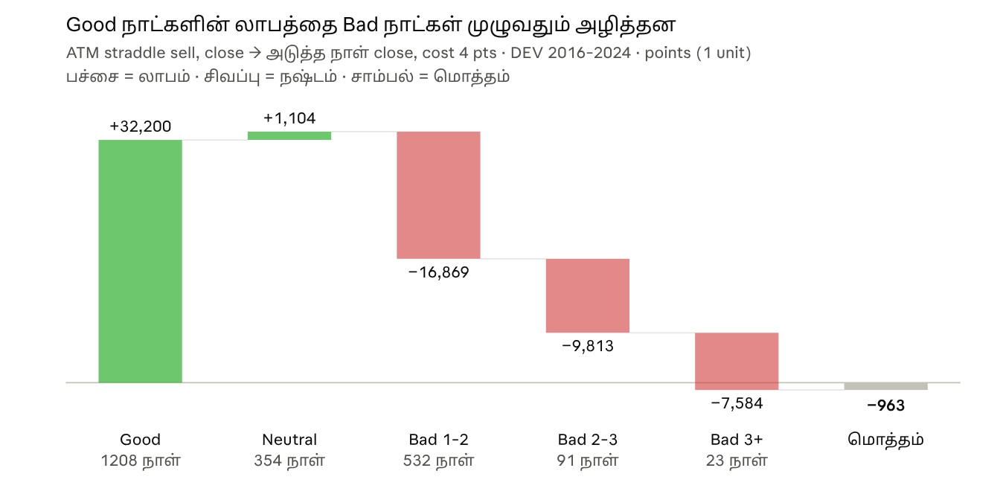

← Articles · Market ஆய்வு
பணம் எந்த அமைப்பிலிருந்து வருகிறது?
Thomas Aaroon · 17 November 2026 · தமிழ்
அறிமுகம்
இந்தக் கட்டுரையின் நான்கு சோதனைகளும் ஒரே பதிலைத் தருகின்றன: மார்க்கெட்டில் பணம், direction-ஐ சரியாகக் கணிப்பதால் வருவதில்லை. அது ஒரு அமைப்பிலிருந்து (structure) வருகிறது.
பின்னணிக்கு ஒரு வரி மட்டும். SEBI ஆய்வின்படி, FY24-ல் proprietary traders, FPIs இருவரும் சேர்ந்து சுமார் ₹61,000 கோடி லாபம் எடுத்தார்கள். அந்த லாபத்தில் 96–97% algo trading மூலம் வந்தது (SEBI study summary). அவர்களின் code நமக்குத் தெரியாது. ஆனால் அவர்கள் எந்த வகை அமைப்பிலிருந்து பணம் எடுக்கிறார்கள் என்பது தெரியும். அதை நம் சொந்த data-வில் சோதிக்க முடியும்.
வீட்டில் இருந்து trade செய்யும் நாம் பல backtests செய்கிறோம். அவற்றில் பெரும்பாலானவை ஒரே கேள்வியைக் கேட்கின்றன: "அடுத்து மேலே போகுமா, கீழே போகுமா?" அவற்றில் வெற்றி மிகக் குறைவு. இந்தக் கட்டுரை வேறு ஒரு கேள்வியைக் கேட்கிறது: "இந்த trade-ல் எனக்கு பணம் யார் கொடுக்கிறார்கள், ஏன் கொடுக்கிறார்கள்?"
பயன்படுத்திய data:
NIFTY daily close, India VIX daily close: 2016 முதல் 16-Nov-2026 வரை
NSE F&O bhavcopy: 2016 முதல் 28-Sep-2026 வரை (2,659 நாட்கள்)
5Fingers live v2.1 trade ledger: 375 trades
சோதனை முறை: DEV காலம் = data தொடக்கம் முதல் Dec 2024 வரை. TEST காலம் = 2025–26. TEST ஒரே ஒரு முறை மட்டும் பார்க்கப்பட்டது. Cost எல்லா P&L கணக்குகளிலும் கழிக்கப்பட்டிருக்கிறது.
இரண்டு கேள்விகள்
Retail trader கேட்கும் கேள்வி direction பற்றியது. பெரிய நிறுவனம் கேட்கும் கேள்வி அமைப்பு பற்றியது. இரண்டும் வேறு வேறு வகையான வேலைகளுக்கு இட்டுச் செல்கின்றன.
| Direction கேள்வி | அமைப்பு கேள்வி | |
|---|---|---|
| கேள்வி | அடுத்து மேலே போகுமா, கீழே போகுமா? | இந்த trade-ல் பணம் யார் கொடுக்கிறார்கள், ஏன்? |
| லாபம் எதைப் பொறுத்தது | சரியான கணிப்பு | மீண்டும் மீண்டும் நடக்கும் ஒரு விலை வித்தியாசம் |
| ஒரு trade-க்கு edge | மிகக் குறைவு, மாறிக்கொண்டே இருக்கும் | சிறியது, ஆனால் நிலையானது |
| முக்கிய ஆபத்து | Cost, edge-ஐ முழுவதும் சாப்பிடுவது | அரிதான பெரிய நாள் ஒன்று |
| சோதிக்க வேண்டியது | Win rate சதவீதம் | விலை வித்தியாசம் இருக்கிறதா, cost-ஐ விடப் பெரியதா, மோசமான நாளில் எவ்வளவு நஷ்டம் |
அமைப்பு கேள்விக்கு மூன்று பகுதிகள் உண்டு:
யார் கொடுக்கிறார்: அவசரமாக வாங்குபவர், option வாங்குபவர், தாமதமாக வருபவர், அதிக cost கொடுப்பவர்.
ஏன் கொடுக்கிறார்: உடனடி fill தேவை, பெரிய move-க்கு பயம், விலை வித்தியாசம் தெரியாதது.
எவ்வளவு நாள் நீடிக்கும்: அந்தக் காரணம் மாறாமல் இருந்தால், அந்த விலை வித்தியாசமும் தொடரும்.
பெரிய நிறுவனங்களின் 5 அமைப்புகள்
பெரிய நிறுவனங்களின் ஐந்து லாப வழிகளில், நான்கில் direction தேவையில்லை. ஐந்தாவது வழி direction-ஐ கணிக்கவில்லை, அதை உருவாக்க முயற்சிக்கிறது.
| அமைப்பு | பணம் யாரிடமிருந்து, ஏன் | Direction தேவையா | Retail செய்ய முடியுமா |
|---|---|---|---|
| 1. Market making | Bid-ல் வாங்கி Ask-ல் விற்கிறார்கள். உடனடி fill வேண்டும் market order கொடுக்கிறது | இல்லை, delta hedge | இல்லை (speed, அளவு) |
| 2. Option selling | Option buyer, நடக்கும் move-ஐ விட அதிக premium கொடுக்கிறார் | இல்லை, delta hedge | ஓரளவு (cost முக்கியம்) |
| 3. Arbitrage | Cash, futures, options இடையே விலை வித்தியாசம் | இல்லை | இல்லை (speed) |
| 4. Speed + குறைந்த cost | தாமதமாக வருபவர், அதிக cost கொடுப்பவர் | இல்லை | இல்லை |
| 5. பணத்தின் அளவு (size) | Index-ஐத் தாமே நகர்த்தி, options-ல் லாபம் | உருவாக்கப்படுகிறது | இல்லை. அனுமதியும் இல்லை |
ஐந்தாவது வழிக்கு ஒரு உதாரணம்: Jane Street வழக்கு (SEBI interim order, July 2025). இவை SEBI-ன் குற்றச்சாட்டுகள், இறுதித் தீர்ப்பு இல்லை.
17-Jan-2024 காலையில் ₹4,370 கோடிக்கு Bank Nifty stocks வாங்கி index-ஐ மேலே தள்ளியது.
அதே நேரத்தில் ₹32,115 கோடிக்கு bearish options positions எடுத்தது. இது stock வாங்கியதை விட 7.3 மடங்கு பெரியது.
மதியம் stocks-ஐ விற்று index-ஐக் கீழே இறக்கியது. Stocks-ல் நஷ்டம், options-ல் அதைவிட அதிக லாபம். அந்த ஒரு நாளில் net லாபம் சுமார் ₹734 கோடி.
இதே முறை 15 expiry நாட்களில் மீண்டும் நடந்ததாக SEBI கூறியது (Outlook Business, Business Recorder).
இந்த வழக்கின் பாடம்: அவர்கள் முதலில் கேட்டது "எந்தப் பக்கம்?" அல்ல. "Options விலைக்கும் stocks விலைக்கும் இடையே என்ன வித்தியாசம், அதில் எந்த அளவு பணம் இருக்கிறது?" என்று கேட்டார்கள். இது அமைப்பு கேள்வி. சாதாரண trader இந்த ஐந்தில் இரண்டாவது அமைப்பை மட்டுமே நேரடியாகச் சோதிக்க முடியும். அடுத்த மூன்று சோதனைகளும் அதைச் செய்கின்றன.
சோதனை 1: VIX சொன்ன move vs நடந்த move
முடிவு: சுமார் 70% நாட்களில், அடுத்த நாள் NIFTY move, முந்தைய நாள் VIX சொன்ன move-ஐ விடக் குறைவாக இருந்தது. இது 11 வருடமும் தொடர்ந்து நடந்தது.
கணக்கு முறை:
VIX சொன்ன move (points) = நேற்றைய NIFTY close × (நேற்றைய VIX ÷ 100) ÷ √365
நடந்த move = | இன்றைய close − நேற்றைய close |, திசை பார்க்காமல்
Ratio = நடந்த move ÷ VIX சொன்ன move
Good: ratio < 0.7 · Neutral: 0.7 – 1.0 · Bad: ratio > 1.0
உதாரணம்: NIFTY 24,000, VIX 14 என்றால், VIX சொன்ன move சுமார் 176 points.

VPS data · nifty_daily.csv + vix_daily.csv · 2,679 நாட்கள், 2016 – 16-Nov-2026
| காலம் | நாட்கள் | Good | Neutral | Bad | Median ratio |
|---|---|---|---|---|---|
| DEV (2016–2024) | 2,214 | 54.7% | 16.0% | 29.3% | 0.62 |
| TEST (2025–26) | 465 | 50.8% | 18.1% | 31.2% | 0.68 |
Median ratio 0.62–0.68. அதாவது ஒரு சாதாரண நாளில், VIX சொன்ன move-ல் மூன்றில் இரண்டு பங்கு மட்டுமே நடக்கிறது. இந்த வித்தியாசத்தைத் தான் option seller விற்கிறார். இது இரண்டாவது அமைப்பு உண்மையில் இருக்கிறது என்பதற்கான நேரடி சான்று.
2026 தான் மிக பலவீனமான வருடம்: Good 46.3%, Bad 33.3%, median ratio 0.73. இவை மூன்றும் 11 வருடங்களில் மோசமான எண்கள்.
சோதனை 2: Bad நாட்களின் அளவு
முடிவு: Bad நாட்களில் சுமார் 80%, VIX சொன்னதை விட 2 மடங்கு வரை மட்டுமே. ஆனால் வருடத்துக்கு 2–3 நாட்களில் move 3 மடங்குக்கு மேல் போகிறது. Seller-க்கு உண்மையான ஆபத்து இந்த சில நாட்களில் தான்.
| Bad பிரிவு (ratio) | DEV நாட்கள் | DEV % (எல்லா நாட்களில்) | TEST நாட்கள் | TEST % |
|---|---|---|---|---|
| 1 – 2 | 533 | 24.1% | 114 | 24.5% |
| 2 – 3 | 92 | 4.2% | 24 | 5.2% |
| 3-க்கு மேல் | 24 | 1.1% | 7 | 1.5% |
2026-ல் இதுவரை 3+ நாட்கள் 5. 2–3 மற்றும் 3+ இரண்டும் சேர்த்து 8.8%. இது 11 வருடங்களில் மிக அதிகம்.
மோசமான 10 நாட்கள்:
| தேதி | முந்தைய VIX | VIX சொன்ன move (pts) | நடந்த move (pts) | Ratio | நிகழ்வு |
|---|---|---|---|---|---|
| 2019-09-20 | 15.55 | 87 | 569 | 6.54 | Corporate tax குறைப்பு |
| 2024-06-04 | 20.94 | 255 | 1,379 | 5.41 | தேர்தல் முடிவு நாள் |
| 2020-03-12 | 31.56 | 173 | 868 | 5.03 | COVID crash |
| 2025-04-07 | 13.76 | 165 | 743 | 4.50 | US tariff crash |
| 2020-02-28 | 17.77 | 108 | 432 | 3.99 | COVID தொடக்கம் |
| 2022-02-24 | 24.54 | 219 | 815 | 3.72 | Russia–Ukraine போர் தொடக்கம் |
| 2020-03-23 | 67.10 | 307 | 1,135 | 3.70 | COVID crash |
| 2020-03-09 | 25.64 | 147 | 538 | 3.65 | COVID crash |
| 2019-09-23 | 15.40 | 91 | 326 | 3.59 | Tax குறைப்பு, அடுத்த நாள் |
| 2021-02-01 | 25.34 | 181 | 647 | 3.58 | Union Budget |
இந்த நாட்களில் இரண்டு வகை இருக்கிறது:
முன்பே தெரிந்த தேதிகள்: தேர்தல் முடிவு, Budget.
திடீர் செய்திகள்: Tax குறைப்பு, COVID, போர், tariff.
கவனிக்க வேண்டியது: 2019-09-20 அன்று VIX 15.55, 2025-04-07 அன்று VIX 13.76. VIX குறைவாக இருந்தது, ஆனாலும் பெரிய move வந்தது. VIX குறைவாக இருப்பது பாதுகாப்பு அல்ல.
சோதனை 3: Edge-ஐ cost சாப்பிடுகிறது
முடிவு: Option selling-ல் edge இருக்கிறது. ஆனால் DEV காலத்தில் ஒரு trade-க்கு edge 3.6 points, cost 4 points. Cost கழித்தால் 9 வருடம் மொத்தமாக −963 points.
சோதனை முறை:
ஒவ்வொரு நாளும் close-ல், NIFTY-க்கு அருகில் உள்ள ATM strike, அடுத்து வரும் expiry.
CE + PE இரண்டையும் விற்பதாகக் கணக்கு. அடுத்த நாள் close-ல் திரும்ப வாங்குவதாகக் கணக்கு.
P&L = விற்ற premium − திரும்ப வாங்கிய விலை − 4 points cost. எல்லாம் 1 unit-க்கு points-ல்.

VPS data · NSE F&O bhavcopy + daily_rows.csv · DEV 2016–2024, 2,208 trades
| காலம் | Trades | மொத்த P&L | Win rate | சராசரி லாபம் / நஷ்டம் | மோசமான நாள் | Max drawdown |
|---|---|---|---|---|---|---|
| DEV (2016–2024) | 2,208 | −962.7 | 59.6% | +28.9 / −43.8 | −844.1 (2024-06-04) | −3,115.1 |
| TEST (2025 – Sep 2026) | 432 | +2,226.1 | 65.5% | +48.1 / −76.4 | −535.2 (2025-05-12) | −1,406.5 |
Cost எவ்வளவு முக்கியம் (DEV):
Cost-க்கு முன் மொத்த லாபம் = −962.7 + (2,208 × 4) = +7,869 points. ஒரு trade-க்கு 3.6 points.
Cost 3 points என்றால்: சுமார் +1,245 points.
Cost 5 points என்றால்: சுமார் −3,171 points.
ஒரு point cost வித்தியாசத்திலேயே முடிவு மாறுகிறது. இது தான் நான்காவது அமைப்பின் (speed + குறைந்த cost) முக்கியத்துவம். பெரிய நிறுவனம் spread-ஐக் கொடுப்பதில்லை, அதைச் சம்பாதிக்கிறது. அதனால் அதே 3.6 points edge அவர்களுக்கு லாபம், நமக்கு நஷ்டம்.
வருட வாரியாக, 11 வருடங்களில் 6 மட்டுமே லாபம். TEST லாபத்தில் 1,849 points 2025-ல் மட்டும் வந்தது. இது நிலையான strategy இல்லை.
சோதனை 4: 5Fingers — 27% win rate-ல் லாபம்
முடிவு: 5Fingers (5F) direction-ஐ சரியாகக் கணிப்பதால் லாபம் எடுக்கவில்லை. நஷ்டத்தைச் சிறியதாக வைத்து, பெரிய move நாளில் 14:49 வரை உள்ளே இருக்கும் அமைப்பால் லாபம் எடுக்கிறது. 375 trades, cost (6 points) கழித்த பிறகு மொத்தம் +2,869 points.
எண்கள்:
Win rate 27% மட்டும்.
சராசரி லாபம் +104.5, சராசரி நஷ்டம் −28.5. ஒரு லாபம் சுமார் 3.7 நஷ்டங்களை ஈடுகட்டுகிறது.
ஒரு trade-க்கு net = 2,869 ÷ 375 = +7.7 points.
| Exit வகை | Trades | மொத்த P&L (pts) | ஒரு trade-க்கு |
|---|---|---|---|
| 14:49 time exit | 140 | +8,589 | +61.4 |
| Breakeven (BE) | 199 | −1,194 | −6.0 |
| Stop loss (SL) | 36 | −4,525 | −125.7 |
இந்த table-ல் தான் 5F-ன் அமைப்பு தெரிகிறது:
தவறான trades-ல் பெரும்பாலானவை (199) BE-ல் முடிகின்றன. ஒரு trade-க்கு நஷ்டம் cost அளவு (−6) மட்டும்.
உண்மையான நஷ்டம் 36 SL trades-ல் மட்டும், அதாவது சுமார் 10%.
மொத்த லாபமும் 140 time-exit trades-லிருந்து வருகிறது. 2025–26-ல் MFE ≥ 100 போன 68 trades எல்லாமே லாபம். MFE < 30 உள்ள 18 trades SL-ல் முடிந்தன (−1,927).
எச்சரிக்கை: 2022–24-ல் 5F-ன் மொத்த PF 0.95. அந்த 3 வருடங்களில் 5F சிறிய நஷ்டம்.
இரண்டு பக்கங்கள்
Option seller-க்கு எந்த நாட்கள் ஆபத்தோ, அதே வகை நாட்களில் தான் 5F சம்பாதிக்கிறது: எதிர்பாராத பெரிய move. இரண்டும் ஒரே அமைப்பின் இரண்டு பக்கங்கள்.
| நாள் வகை | Option seller (ATM straddle) | 5Fingers |
|---|---|---|
| அமைதியான நாள் | லாபம்: Good நாட்களில் சராசரி +26.7 pts | சிறிய நஷ்டம்: BE-ல் சராசரி −6 pts |
| பெரிய move நாள் | பெரிய நஷ்டம்: 3+ நாட்களில் சராசரி −330 pts | பெரிய லாபம்: 14:49 exit-ல் சராசரி +61 pts |
| இரவு gap | Position இரவில் திறந்திருக்கிறது | 15:15-க்குள் square-off, gap risk இல்லை |
| பணம் யாரிடமிருந்து | Option buyer கொடுக்கும் அதிக premium | பெரிய move-ஐ எதிர்பாராத பக்கம் |
| லாபத்தின் வடிவம் | அடிக்கடி சிறிய லாபம், அரிதாக பெரிய நஷ்டம் | அடிக்கடி சிறிய நஷ்டம், அரிதாக பெரிய லாபம் |
| Win rate | 59.6% (DEV) | 27% |
இரண்டு பக்கங்களிலும் லாபம் எடுக்க முடியும். ஆனால் ஒவ்வொன்றுக்கும் ஒரு நிபந்தனை உண்டு:
Seller: அரிதான பெரிய நாளில் பிழைக்க hedge, சரியான position size, மிகக் குறைந்த cost மூன்றும் தேவை. பெரிய நிறுவனங்களிடம் மூன்றும் இருக்கின்றன.
5F: தொடர்ச்சியான சிறிய நஷ்டங்களை மனதால் தாங்க வேண்டும். 100 trades-ல் 73 trades லாபம் தராது. பெரிய move நாளில் முன்பே வெளியேறினால் மொத்த லாபமும் போய்விடும்.
குறிப்பு: இந்த ஒப்பீடு அமைப்பு ரீதியானது. ஒரே தேதிகளில் seller P&L-ஐயும் 5F P&L-ஐயும் நேரடியாக இணைத்து இன்னும் சோதிக்கவில்லை.
சாதாரண trader-க்கான பாடங்கள்
நான்கு சோதனைகளிலிருந்தும் ஏழு பாடங்கள் கிடைக்கின்றன. இவை எந்த strategy-க்கும் பொருந்தும்.
கேள்வியை மாற்றுங்கள். ஒரு strategy-ஐ backtest செய்வதற்கு முன், "இதில் பணம் யாரிடமிருந்து வருகிறது, ஏன்?" என்று ஒரு வரியில் எழுதுங்கள். பதில் இல்லையென்றால், அந்த backtest-ன் லாபம் தற்செயலாக வந்ததாக இருக்க வாய்ப்பு அதிகம்.
Win rate சதவீதம் மட்டும் போதாது. Straddle Win rate 59.6%, ஆனால் நஷ்டம். 5F Win rate 27%, ஆனால் லாபம். சராசரி லாபம், சராசரி நஷ்டம் இரண்டையும் சேர்த்துத் தான் பார்க்க வேண்டும்.
Cost-ஐ முதலில் கணக்கிடுங்கள். ஒரு trade-க்கு edge எவ்வளவு, cost எவ்வளவு என்று ஒப்பிடுங்கள். Straddle-ல் edge 3.6, cost 4. அதுவே முழு முடிவையும் தீர்மானித்தது.
மோசமான நாளை முதலில் அளவிடுங்கள். 9 வருடத்தில் 23 நாட்கள் −7,584 points. அந்த நாளில் நீங்கள் பிழைக்க முடியுமா என்பது தான் முதல் கேள்வி.
சராசரியை மட்டும் நம்பாதீர்கள். முடிவுகளை Good / Neutral / Bad என்றும், காலம் வாரியாகவும் பிரித்துப் பாருங்கள். மொத்த PF 1.37 என்றாலும், 5F 2022–24-ல் PF 0.95.
எல்லா data-வையும் பார்த்த பிறகு கண்டுபிடித்த filter-ஐ உடனே பயன்படுத்தாதீர்கள். DEV, TEST என்று பிரியுங்கள். TEST-ஐ ஒரு முறை மட்டும் பாருங்கள். புதிய filter-ஐ shadow பதிவாக முதலில் சோதியுங்கள்.
உங்களால் செய்ய முடியாத அமைப்புகளை விட்டுவிடுங்கள். Speed, size, மிகக் குறைந்த cost தேவையான அமைப்புகளில் retail trader போட்டியிட முடியாது. நேரம், விலை மாற்றம், risk அமைப்பு மூலம் வரும் edge-ஐ தேடுங்கள்.
வரம்புகள்
Straddle சோதனை bhavcopy close விலையைப் பயன்படுத்துகிறது. உண்மையான fill வேறுபடலாம்.
Cost 4 points என்பது தோராயமான எண். முடிவு இந்த எண்ணைப் பொறுத்து மாறும்.
Margin, capital, lot size எதுவும் கணக்கில் இல்லை. எல்லாம் 1 unit-க்கு points.
Straddle P&L-ம் 5F P&L-ம் ஒரே தேதிகளில் நேரடியாக இணைத்துச் சோதிக்கப்படவில்லை.
Jane Street விவரங்கள் SEBI interim order-ன் குற்றச்சாட்டுகள், இறுதித் தீர்ப்பு அல்ல.
ஆதாரங்கள்
Math by Thomas VPS research: vix_vs_actual.py, bad_days.py, straddle_pnl.py (17-Nov-2026)
கல்வி நோக்கத்திற்கு மட்டும். இது முதலீட்டு ஆலோசனை அல்ல. Entry, target, stop-loss எதுவும் வழங்கப்படவில்லை. ஆசிரியர் SEBI-யில் பதிவு செய்யப்பட்டவர் அல்ல. Derivatives trading-ல் மூலதனம் முழுவதும் இழக்கூடும்.
Math by Thomas — Pure AMT — No Magic, Just Math.